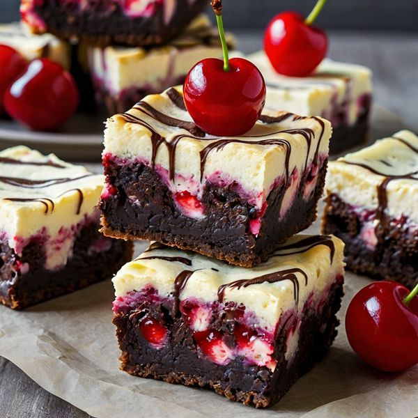

Cherry Cheesecake Brownies

Savor the indulgence of our Cherry Cheesecake Brownies, featuring rich, fudgy chocolate brownies layered with creamy cheesecake and topped with sweet cherry pie filling. Each bite is a delightful blend of velvety cheesecake and luscious cherries, creating a perfect treat for any occasion!
Ingredients
- 1 cup butter
- 2 cups white sugar
- 2/3 cup cocoa powder
- 4 eggs
- 2 teaspoons vanilla extract
- 1 cup gluten-free all purpose baking flour
- 1/2 teaspoon gluten-free baking powder
- 1/4 teaspoon salt
- 1 (8 ounce) package cream cheese, softened
- 1/3 cup white sugar
- 1 egg
- 1 (21 ounce) can cherry pie filling
Directions
-
Preheat the oven to 350 degrees F (175 degrees C). Grease a 9x13-inch baking pan.
-
Melt butter in the microwave, about 1 minute. Stir in sugar and cocoa powder. Blend in 4 eggs, one at a time, using an electric mixer; add vanilla extract. Combine flour (see Cook's Note), baking powder, and salt in a small bowl, and add to the batter. Mix until well combined and pour into the prepared baking pan. Level with a knife or spatula.
-
Beat together cream cheese, sugar, and 1 egg in a second bowl until smooth. Dollop the cream cheese mixture on top of the brownie batter.
-
Separate cherries from the jelled filling and dollop them over the cream cheese mixture, saving leftover jelly for another use if desired. Swirl together using a knife.
-
Bake in the preheated oven until brownies are set and edges pull away from the sides of the pan, 35 to 45 minutes. Remove from the oven and cool thoroughly before cutting into bars.